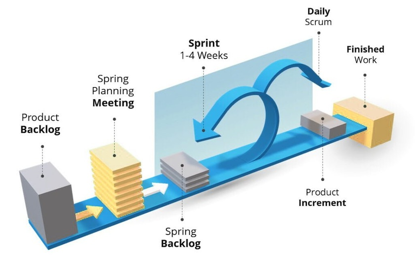

Środowisko programistyczne
Organizacja pracy w projekcie (część 2)
Priorytetyzacja backlogu – metoda MoSCoW
Metoda MoSCoW pomaga zespołom określić priorytet zadań, dzieląc je na cztery kategorie:
-
Must have (M) – absolutnie kluczowe wymagania, bez których projekt nie może zostać ukończony.
Przykład: „System musi umożliwiać logowanie użytkowników.”
-
Should have (S) – bardzo ważne, ale nie krytyczne; mogą być zrealizowane później, jeśli zabraknie czasu.
Przykład: „Aplikacja powinna mieć możliwość logowania przez Google, ale może to być dodane po premierze.”
-
Could have (C) – mile widziane dodatki, ale nie wpływają znacząco na główne funkcjonalności.
Przykład: „Dodanie ciemnego motywu w interfejsie użytkownika.”
-
Won't have (W) – funkcje, które nie będą realizowane w tym sprincie / wersji, ale mogą być brane pod uwagę w przyszłości.
Przykład: „Obsługa wielu języków w pierwszej wersji aplikacji.”
Story Points i estymacja pracy w sprincie
Story Points to jednostka miary złożoności i wysiłku wymaganego do wykonania zadania. Nie jest to liczba godzin, lecz względna trudność.
Jak przydzielać zadania?
Podczas sprint planningu zespół przypisuje każdemu zadaniu Story Points, np. według skali Fibonacciego (1, 2, 3, 5, 8, 13...).
-
1-2 SP – proste zadania, np. „Dodanie nowego przycisku w UI.”
-
3-5 SP – średnie zadania, np. „Zaimplementowanie formularza logowania.”
-
8-13 SP – bardziej złożone zadania, np. „Stworzenie i integracja API do uwierzytelniania użytkowników.”
Uwaga!
Każdy członek zespołu ma ograniczoną liczbę Story Points, które może zrealizować w jednym sprincie. Np. jeśli sprint trwa 2 tygodnie, a programista może średnio ukończyć 10 SP, to nie powinien dostawać więcej niż 10 SP na sprint.
Sprint – jak wygląda praca w Scrum?

Sprint to ustalony czas (np. 1-2 tygodnie), w którym zespół realizuje zaplanowane zadania.
Przebieg sprintu:
-
Sprint Planning – zaplanowanie zakresu pracy na sprint.
-
Daily Stand-up – krótkie codzienne spotkania (15 min), każdy odpowiada na 3 pytania:
-
Co zrobiłem wczoraj?
-
Co zrobię dzisiaj?
-
Czy mam jakieś blokery?
-
-
Sprint Review – podsumowanie prac, prezentacja wyników.
-
Sprint Retrospective – analiza, co poszło dobrze, a co można poprawić.

Role w Scrum
-
Product Owner – osoba odpowiedzialna za backlog i priorytetyzację zadań.
Dba o to, by zespół dostarczał wartość biznesową.
Przykład: decyduje, czy dodać funkcję „logowania przez Facebook” w tym sprincie czy w przyszłym.
-
Scrum Master – wspiera zespół, pomaga usuwać blokery, pilnuje zasad Scrum.
Przykład: jeśli zespół ma problem z dostępem do serwera, Scrum Master pomaga znaleźć rozwiązanie.
-
Development Team – programiści, testerzy, DevOps – osoby realizujące zadania w backlogu.
-
Stakeholder / Client – osoby, które mają wpływ na produkt (np. klient, szef, inwestorzy).
Środowiska wirtualne w Pythonie
Wirtualne środowiska w Pythonie pozwalają na izolację pakietów dla różnych projektów, dzięki czemu unikamy konfliktów zależności i problemów z różnymi wersjami bibliotek.
Po co używać wirtualnych środowisk?
-
Izolacja projektów – Każdy projekt ma swoje własne zależności, dzięki czemu nie ma konfliktów między różnymi wersjami pakietów.
-
Bezpieczeństwo – Można testować nowe pakiety bez ryzyka uszkodzenia globalnego środowiska.
- Reprodukowalność – Można łatwo odtworzyć środowisko na innym komputerze.
- Elastyczność – Możliwość pracy z różnymi wersjami Pythona i bibliotek w tym samym systemie.
Popularne narzędzia do zarządzania środowiskami
| Narzędzie | Opis | Zalety | Wady |
|---|---|---|---|
venv |
Wbudowane narzędzie Pythona do tworzenia środowisk wirtualnych. | ✅ Wbudowane w Python, lekkie, proste | ❌ Brak zarządzania zależnościami i wersjami Pythona |
virtualenv |
Starsza alternatywa dla venv, działa z wieloma wersjami Pythona. |
✅ Szybsze niż venv, kompatybilne z pip |
❌ Nie zarządza wersjami Pythona |
pyenv |
Narzędzie do zarządzania wersjami Pythona. | ✅ Pozwala używać wielu wersji Pythona | ❌ Nie zarządza pakietami |
conda |
Zaawansowane narzędzie do zarządzania środowiskami i pakietami (głównie dla Data Science). | ✅ Instalacja skompilowanych pakietów, zarządza wersjami Pythona | ❌ Wymaga pobrania Minicondy lub Anacondy |
poetry |
Nowoczesne narzędzie do zarządzania zależnościami i środowiskami. | ✅ Automatyczne zarządzanie pakietami, świetne do aplikacji | ❌ Może być nadmiarowe dla prostych projektów |
Jak używać venv?
Tworzenie nowego środowiska:
python -m venv my_env
Aktywacja środowiska:
source my_env/bin/activate
Dezaktywacja środowiska:
deactivate
Instalowanie pakietów:
pip install numpy pandas
Zapisywanie zależności do pliku (requirements.txt)
pip list --format=freeze > requirements.txt
Odtworzenie środowiska na innym komputerze:
pip install -r requirements.txt
Jak używać Conda?
Miniconda vs Anaconda – jaka różnica?
| Cecha | Miniconda | Anaconda |
|---|---|---|
| Rozmiar | 🔹 Małe (~50MB) | 🔹 Duże (~3GB) |
| Domyślne pakiety | 🚫 Brak pakietów | ✅ Zawiera pakiety (numpy, pandas, Jupyter itp.) |
| Elastyczność | ✅ Instalujesz tylko to, czego potrzebujesz | ❌ Instaluje się dużo zbędnych rzeczy |
| Licencja | ✅ Darmowa (w tym do użytku komercyjnego) | ❌ Wymaga licencji komercyjnej dla firm |
📌 Wniosek: Jeśli chcesz pełną kontrolę i minimalny rozmiar – używaj Minicondy. Jeśli chcesz gotowe środowisko do Data Science – wybierz Anacondę.
Tworzenie środowiska Conda
Tworzenie nowego środowiska:
conda create -n my_env python=3.9
Aktywacja środowiska:
conda activate my_env
Dezaktywacja środowiska:
conda deactivate
Usunięcie środowiska:
conda remove -n my_env --all
Instalowanie pakietów:
conda install numpy pandas
Dlaczego używać conda install zamiast pip install?
- Conda pobiera skompilowane pakiety → działa szybciej i eliminuje problemy z zależnościami.
- Może automatycznie dopasować wersje zależności (pip nie robi tego tak dobrze).
- pip instaluje pakiety z PyPI, a conda z własnych repozytoriów (np. conda-forge), co czasem prowadzi do konfliktów.
Jak zarządzać zależnościami?
requirements.txt (pip)
📌 Plik używany przez pip, zawiera listę pakietów do zainstalowania.
Przykład:
numpy==1.23.0
pandas>=1.5,<2.0
scikit-learn
environment.yml (conda)
📌 Plik konfiguracyjny do odtwarzania środowisk Conda.
name: my_env
dependencies:
- python=3.9
- numpy=1.23.0
- pandas>=1.5,<2.0
- pip
- pip:
- scikit-learn
Tworzenie środowiska z pliku:
conda env create -f environment.yml
Eksportowanie aktualnego środowiska do pliku:
conda env export > environment.yml
Dependency Hell – jak Conda rozwiązuje konflikty?
Conda automatycznie sprawdza zgodność wersji pakietów i jeśli nowy pakiet wymaga innej wersji już zainstalowanego pakietu, może go zaktualizować, obniżyć wersję lub usunąć.
Generowanie "planu działania" poprzez conda:
conda install tensorflow --dry-run
Podsumowanie
-
venv – dobre do prostych projektów.
-
Conda – najlepsze dla Data Science i ML.
-
pyenv – jeśli musisz pracować z wieloma wersjami Pythona.
-
poetry – nowoczesne zarządzanie pakietami dla aplikacji.
Pierwsza aplikacja w Streamlit
-
Przykładowa aplikacja znajduje się w folderze
sentiment_analysis. -
Dokumentacja pakietu, elementów oraz przykładowe aplikacje dostępne na: https://docs.streamlit.io/